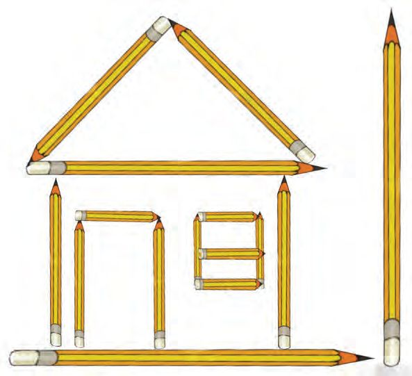
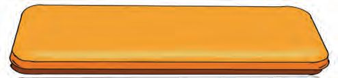
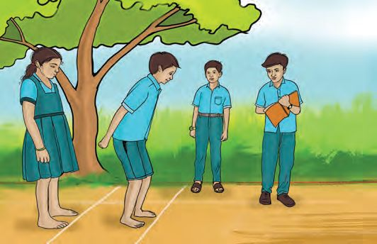

5
Let’s Measure
Rolling marbles
Allen and friends are playing a game of rolling marbles.
Allen and his friend measured the distance the
marble rolled, with their foot. And the measures
were different. They solved this problem
themselves.
How do you think they did it?
Lengths in a scale
Take out your scale and check. What all things
are marked on it?
• short lines
•
•
•
•
•
•
The distance
between two
consecutive long
lines is 1 centimetre.
Measuring lengths
Length of pen
Length of pencil
Length of
eraser
Look at the longer marks below
the centimetre marks. Each of
these longer length is called an
inch.
62
We can shortly
write ‘cm’
instead of
centimetre.
Page 63
Figure fig_ch05_p063_01 (Page 63)

Figure fig_ch05_p063_02 (Page 63)

Figure fig_ch05_p063_03 (Page 63)
Let’s Measure
Look at the paths of the marbles Allen and his friends rolled.
Which line is the longest?
Tick your guess.
Measure each
length and write
it on the lines.
Pencil lengths
Look at the picture, Allen made with pencils.
Which of these would fit inside the box below? Tick them.
Don’t you like the pencil house? Try to make pictures you like
with eerkkil bits cut to correct lengths.
What would be the total length
if all the five paper strips were
joined end to end?
Guess
Length
Didn’t all groups get 100
centimetres ?
100 centimetres is 1metre.
100 centimetres = 1metre
Length of classroom
Teacher has shown
you the metre scale
and the 30 centimetre
scale, hasn’t she?
What is the length of your
classroom?
Guess
Length
And the length of the veranda?
Guess
Length
66
Page 67
Figure fig_ch05_p067_01 (Page 67)

Figure fig_ch05_p067_02 (Page 67)
Let’s Measure
Guess the length of bench, desk and the blackboard in your
classroom. Then actually measure and check. Write them down.
Length
Guess
Bench
Desk
Blackboard
Stand...and jump
Let’s have a jumping
contest today. Each
must stand on a line
and jump forward.
Write the name and
distance each jumped
in the order of
performance.
Place
Name
Who among you jumped more than 1 metre?
67
Distance (cm)
Page 68
Figure fig_ch05_p068_01 (Page 68)
Mathematics Standard - III
Gift I got
There’s a gift for each of you. To find this out, complete this
pattern.
250, 275, 300, . . . , . . .
Join the numbers below in the order of the pattern.
300
350
250
325
275
What is the length of the given line?
My guess
On measuring
Are all the lines you’ve drawn of the same length?
Colour the picture. What’s the gift you got?
Total length
Make a rectangle with eerkkil bits. What is
the total length of the eerkkil bits used?
Make a triangle with eerkkil bits. What is the
total length of the eerkkil bits used?
Make a rectangle with eerkkil bits of the same
length. What is the total length of the eerkkil
bits used?
Make a triangle with eerkkil bits of the same
length. What is the total length of the eerkkil
bits used?
Play train
How about
playing train?
Allen and friends bought a blue ribbon and a red ribbon to play
train. Each ribbon is 350 centimetres long.
What is the total
length of the ribbons?
71
Page 72
Figure fig_ch05_p072_01 (Page 72)
Mathematics Standard - III
They tied together the ribbons, to make a ring and the length was
reduced by 20 centimetres.
What is its length now?
What I understood from the
question
Facts needed to
calculate the answer
My computations
Answer I got
Since all of them couldn’t stand within the ring, they bought
6metres each of blue and red ribbons.
What is the total length of these pieces now?
The price of one metre of ribbon is ten rupees. So, how much did
they spend on ribbons?
Write the names of the objects and their lengths in order
2.
A
B
C
D
E
F
G
H
I
J
K
Which of the following is the longest distance?
i.
From A to F
ii.
From B to J
iii.
From J to N
iv.
From E to K
73
L
M
N
O
P
Page 74
Figure fig_ch05_p074_01 (Page 74)
Mathematics Standard - III
3. Equal lengths
• Cut out eerkkil bits to make a rectangle of the same length of
your textbook.
• Are there pieces of the same length among them?
Length
Number
• What is the total length of all
the eerkkil bits?
4. Length of sari
The length of Mom’s sari is 6 metres. From this 70 centimetres
was cut off for a blouse.
What’s the remaining length?